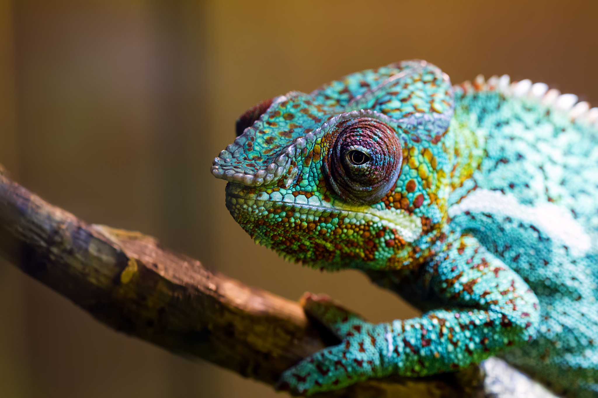
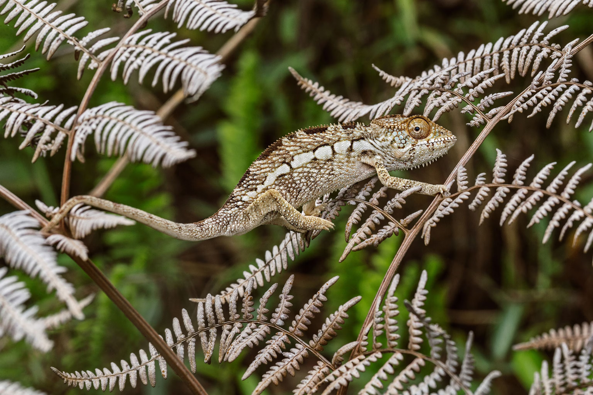

Chameleons are famous for their unique and striking appearance. They have a laterally compressed body covered in rough, granular skin that often features vibrant colors and patterns. Their most notable feature is their ability to change color, which they achieve through specialized cells called chromatophores. This color change helps them with camouflage, communication, and temperature regulation. Chameleons also have distinctive eyes that can move independently, allowing them to look in two different directions at once. Their long, sticky tongue is perfect for catching insects, often extending longer than their own body length. Additionally, their feet are zygodactylous—meaning they have toes grouped in two opposing sets—helping them grip branches securely.
Chameleons are fascinating reptiles known for their striking features and remarkable adaptations. They have laterally compressed bodies, zygodactylous feet (two toes pointing forward, two backward) for gripping branches, and independently moving eyes that allow nearly 360-degree vision. Their skin contains specialized cells called chromatophores, which enable them to change color for camouflage, communication, or temperature regulation. Many species also possess a prehensile tail, which functions almost like a fifth limb to help maintain balance in their arboreal habitats. Chameleons have long, sticky tongues that can shoot out with incredible speed and accuracy to catch insects. These adaptations make them highly specialized hunters and climbers, perfectly suited for their environments in forests, savannas, and even mountainous regions.

One remarkable fact about chameleons is that their eyes can rotate independently, allowing them to scan two different directions at once. This unique vision helps them spot predators and prey without moving their heads.
Another interesting fact is that a chameleon’s tongue can be up to twice the length of its body. It can strike with speeds of up to 13 miles per hour, allowing the reptile to snatch insects in the blink of an eye.
